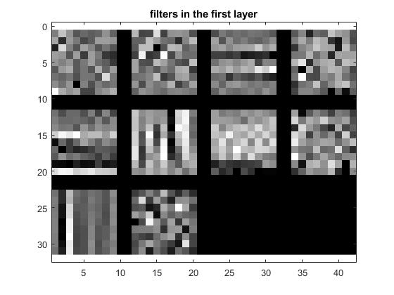
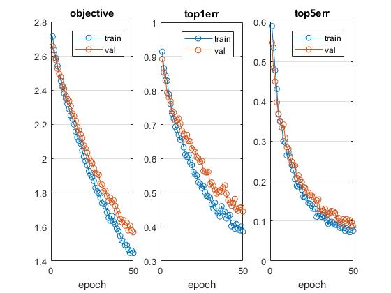
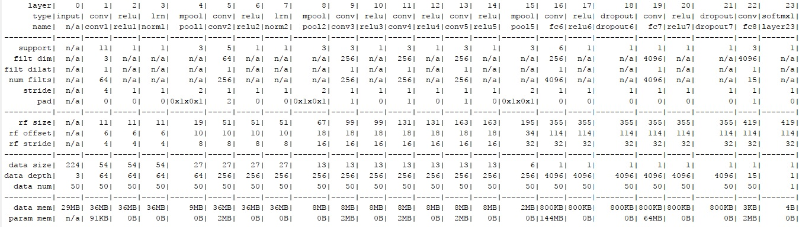
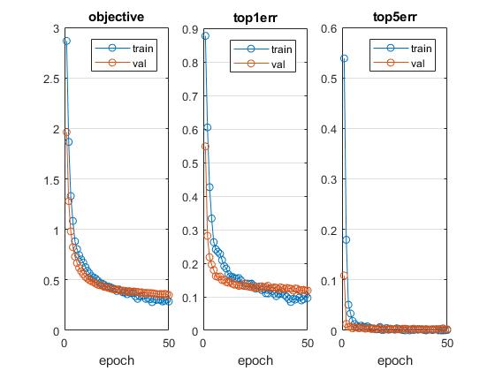
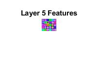
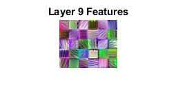
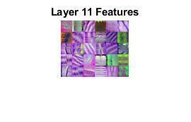
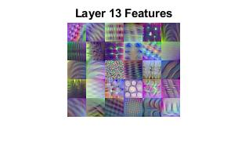
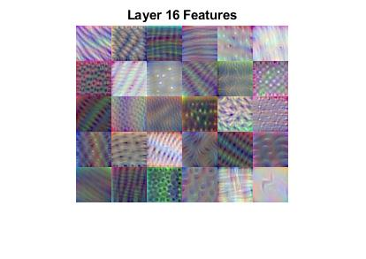
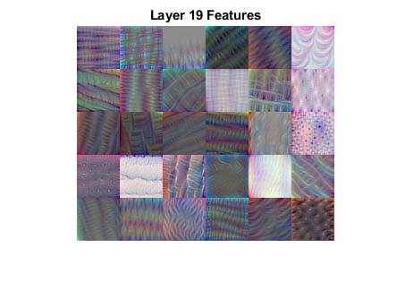

Project 6 / Deep Learning
In Project 6, we are assigned to design a deep convolutional neural network for 15-Scenes Recognition. Before we start, let's take a look at our previous result (Table I) in Project 4. In our previous project, I used Bag-of-SIFT+Linear SVM to get accuracy ~60% and used GMM and Fisher Encoding+RBF Kernel to achieve accuracy ~82%. In Part 1 of this project, I will build a shallow network (less than 10 layers) to achieve accuracy ~50%. In Part 2, I will use a pretrained VGG model (23 layers) to improve my accuracy up to 90%.
| Feature Representation | Classifier | Best Accuracy(%) |
|---|---|---|
| Tiny images | 1-Nearest Neighbor | 15.3% |
| Bag of SIFT | 1-Nearest Neighbor | 50.4% |
| Bag of SIFT | Linear SVM | 57.5% |
| Bag of SIFT | Non-linear SVM | 70.0% |
| GMM & Fisher encoding | Non-linear SVM | 80.1% |
| GMM & Fisher encoding | SVM RBF Kernel (libsvm) | 81.8% |
| Shallow Convolutional Neural Network | Composed only 6 layers | 55.5% |
| Deep Convolutional Neural Network | Modified VGG-F with 23 layers | 90.3% |
Part I: Shallow Convolutional Neural Network
In this part, I build a convolutional neural network from scratch. Then, I to step by step improve its performance. I used tricks like image augmentation, batch normalization and dropout and made a table to visualize their influence.
Table of Steps and its Performance:| Name | Feature | Accuracy(%) |
|---|---|---|
| Random Guess | Random Guess from 15 categories | 6.6% |
| Shallow CNN (Base Line) | CNN with 6 layers | 28.9% |
| Data Augmentation (Jitter) | Random Flip Image | 34.3% |
| Normalization (w/o Jitter) | Image with Zero Mean w/o Jitter | 47.0% |
| Dropout | Dropout 50% Connections | 48.9% |
| Normalization (w/i Jitter) | Image with Zero Mean w/i Jitter | 52.1% |
| Batch Normalization | Normalize Batch after Activation | 55.5% |

Visualization of Learned Filters:

Performance:

Part II: Deep Convolutional Neural Network from VGG-F
In this part, I first change the input image from grey to RGB with resolution 224x224 to meet the input format of VGG. After this, I normalize my images. To adjust our goal from 1000-classification to 15-Scenes, I change the FC8 layer in VGG-F. Specifically, FC8 was a fully-connected layer with input size 4096 and output size 1000. To output 15 categories, I change the original 1000 classes to 15. In addition, I also add 2 dropout layers between FC6 to FC7 and FC7 to FC8, which is the same as default VGG netork but lost in our download mat file.
Visualization of the modified VGG Network:

Visualization of Learned Filters:

Performance:

Part III: Extra Credit in Deep Dream Visualization (+10%)
In this part, I extract features from all convolutional layers and create figures to verify its result. I implemented a 30 channels result from layer 5, 9, 13, 16 and 19. We can easily figure out in first 2 convolutional layers, our results are composed only lines. In layer 11 and 13, we can start to see shapes. In the last 2 layers, there are more abstract shapes in our figure. Code named: DeepDreamVisualization.m
     